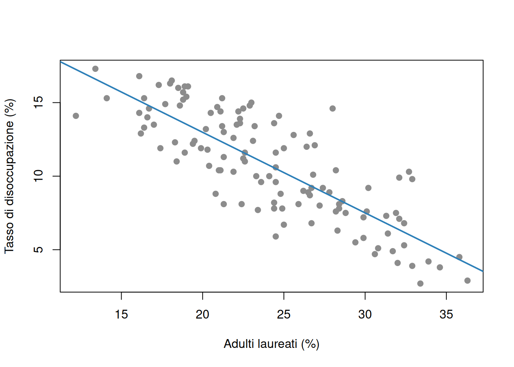
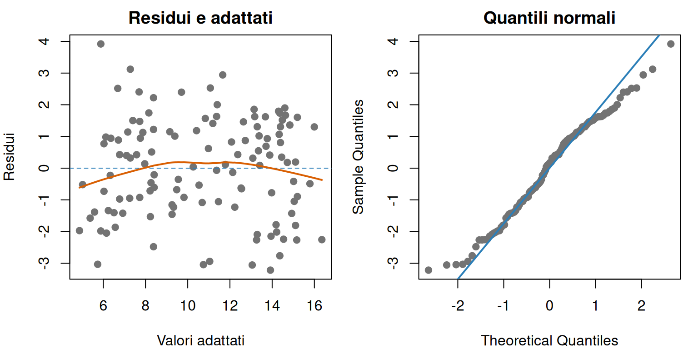

Nei comuni con una quota più elevata di laureati il tasso di disoccupazione tende a essere più basso? Quanto cambia questa associazione quando confrontiamo comuni della stessa area territoriale? Possiamo prevedere il tasso di disoccupazione di un comune non ancora osservato? Queste domande sembrano simili, ma riguardano descrizione, previsione e spiegazione causale: tre obiettivi che non devono essere confusi.
La regressione descrive come il valore medio di una variabile cambia al variare di una o più caratteristiche osservate. È uno degli strumenti più usati nell’analisi economica e sociale perché permette di quantificare associazioni, confrontare gruppi, formulare previsioni e rappresentare esplicitamente l’incertezza.
Un modello è però una semplificazione. Il suo risultato dipende dalla qualità dei dati, dalle variabili incluse, dalla forma funzionale e dalle ipotesi adottate. Una regressione calcolata correttamente non rende automaticamente causale l’associazione stimata.
7.1 Dallo scatterplot a un modello
Il capitolo sulla statistica descrittiva ha introdotto scatterplot e correlazione. La correlazione riassume direzione e intensità di un’associazione lineare tra due variabili, ma tratta le variabili in modo simmetrico. La regressione assegna invece ruoli diversi:
la variabile dipendente o risposta, indicata con \(Y\), è il fenomeno che vogliamo descrivere o prevedere;
la variabile esplicativa, regressore o predittore, indicata con \(X\), è la caratteristica usata per studiare come varia la risposta.
La scelta di questi ruoli deriva dalla domanda di ricerca, non dal software. Chiamare \(X\) “variabile indipendente” non garantisce che sia statisticamente indipendente da altre variabili o dal termine di errore.
Costruiamo un campione simulato di 120 comuni. Per ogni comune osserviamo l’area territoriale, la percentuale di residenti adulti laureati e il tasso di disoccupazione. I dati non rappresentano comuni reali. Usiamo un seme per rendere la simulazione riproducibile.
area laureati disoccupazione
1 Nord 28.52 7.18
2 Centro 23.91 10.59
3 Sud 20.29 13.95
Nel campione simulato i comuni del Nord hanno in media il 28,52% di laureati e una disoccupazione del 7,18%; quelli del Sud hanno rispettivamente il 20,29% e il 13,95%. Queste differenze sono state incorporate nella simulazione e non sono stime di divari territoriali reali.
Laureati e disoccupazione nei 120 comuni simulati, distinti per area.
Lo scatterplot mostra un’associazione negativa: nei dati simulati, quote più alte di laureati tendono ad accompagnarsi a tassi di disoccupazione più bassi. I colori rivelano però anche una struttura territoriale. Una sola retta potrebbe confondere il confronto tra comuni con le differenze medie tra aree.
7.2 La regressione lineare semplice
Per l’unità \(i\), il modello di regressione lineare semplice è
\[
Y_i=\beta_0+\beta_1X_i+\varepsilon_i,
\]
dove:
\(Y_i\) è la variabile dipendente per l’unità \(i\);
\(X_i\) è il valore della variabile esplicativa;
\(\beta_0\) è l’intercetta;
\(\beta_1\) è la pendenza;
\(\varepsilon_i\) è il termine di errore, che raccoglie la parte di \(Y_i\) non rappresentata dalla relazione lineare;
\(i=1,\ldots,n\) identifica le \(n\) unità osservate.
Se il termine di errore ha media condizionata nulla, cioè \(E(\varepsilon_i\mid X_i)=0\), allora
\[
E(Y_i\mid X_i)=\beta_0+\beta_1X_i.
\]
Il simbolo \(E(Y_i\mid X_i)\) indica il valore medio di \(Y\) tra unità con lo stesso valore di \(X\). La retta descrive quindi una media condizionata, non il valore esatto di ogni unità.
La pendenza \(\beta_1\) indica di quanto varia in media \(Y\) quando \(X\) aumenta di un’unità. L’intercetta \(\beta_0\) è il valore medio previsto di \(Y\) quando \(X=0\). Questa interpretazione può essere priva di interesse se zero è impossibile o lontano dai dati osservati.
7.2.1 Stima con i minimi quadrati
I parametri \(\beta_0\) e \(\beta_1\) descrivono la popolazione e sono ignoti. Nel campione li stimiamo con \(\widehat\beta_0\) e \(\widehat\beta_1\). Per ogni osservazione otteniamo un valore adattato
Il residuo è la distanza verticale tra il valore osservato e la retta stimata. Non coincide con il termine teorico \(\varepsilon_i\): il primo è calcolabile dopo la stima, il secondo non è direttamente osservabile.
Il metodo dei minimi quadrati ordinari sceglie i coefficienti che rendono minima la somma dei residui al quadrato:
I simboli \(b_0\) e \(b_1\) rappresentano qui valori possibili tra i quali il metodo cerca il minimo. Elevare al quadrato impedisce che residui positivi e negativi si annullino e penalizza maggiormente gli scarti grandi. Proprio per questo, osservazioni estreme possono influenzare molto la retta.
Nel campione, un punto percentuale in più nella quota di laureati è associato in media a circa 0,55 punti percentuali in meno nel tasso di disoccupazione. Il coefficiente riguarda punti percentuali, non una diminuzione dello 0,55%.
L’intercetta 23,94 corrisponde alla previsione quando la quota di laureati è zero. Poiché il campione non contiene comuni vicini a zero, è soprattutto un parametro necessario a posizionare la retta e non un risultato da interpretare sostantivamente.
plot( comuni_reg$laureati, comuni_reg$disoccupazione,pch =19,col ="grey55",xlab ="Adulti laureati (%)",ylab ="Tasso di disoccupazione (%)")abline(modello_semplice, col ="#2C7FB8", lwd =2)

Retta di regressione semplice per i comuni simulati.
La retta riassume la tendenza complessiva, ma non mostra che una parte dell’associazione coincide con differenze territoriali. Per affrontare questo problema occorrono più regressori.
7.3 Adattamento e incertezza
Una stima puntuale non è una certezza. Un campione diverso produrrebbe coefficienti diversi. L’errore standard misura quanto la stima tenderebbe a variare tra campioni ripetuti sotto le ipotesi del modello. Un errore standard piccolo indica una stima relativamente precisa, non necessariamente importante sul piano sostantivo.
7.3.1 Il coefficiente di determinazione
L’indice \(R^2\) confronta i residui della regressione con gli scarti dalla media:
dove \(\overline y\) è la media campionaria della risposta. Con un’intercetta, \(R^2\) è compreso tra 0 e 1 e rappresenta la quota della variabilità campionaria di \(Y\) associata ai valori adattati dal modello.
Per il modello semplice, \(R^2\) è 0,663: circa il 66,3% della variabilità della disoccupazione nel campione simulato è rappresentato dalla relazione lineare con la quota di laureati. Non significa che l’istruzione “causi il 66,3%” della disoccupazione, né che il modello preveda correttamente altri territori o periodi.
Non esiste una soglia universale che renda un \(R^2\) buono. Nei fenomeni sociali una parte ampia della variabilità individuale può essere intrinsecamente difficile da prevedere; un valore elevato può invece derivare da trend comuni, sovradattamento o regressioni spurie.
7.3.2 Intervalli e test
Un intervallo di confidenza al 95% fornisce un insieme di valori compatibili con i dati e le ipotesi del modello. Il p-value per il test \(H_0:\beta_j=0\) misura quanto i dati sarebbero incompatibili con un coefficiente nullo, se l’ipotesi nulla e le altre assunzioni fossero valide.
Un piccolo p-value non misura la grandezza dell’associazione, non indica la probabilità che l’ipotesi nulla sia vera e non dimostra causalità. Per interpretare un risultato occorre riportare almeno stima, unità di misura, intervallo di confidenza e rilevanza sostantiva.
7.4 Regressione lineare multipla
I fenomeni economici dipendono raramente da una sola caratteristica. Con \(p\) regressori, il modello lineare multiplo è
dove \(X_{ij}\) è il valore del regressore \(j\) per l’unità \(i\) e \(\beta_j\) è il relativo coefficiente. Ogni \(\beta_j\) descrive la variazione media di \(Y\) associata a un aumento unitario di \(X_j\), a parità degli altri regressori inclusi nel modello.
Questa espressione significa che confrontiamo unità simili rispetto alle altre variabili osservate. Non significa che tutte le altre caratteristiche, comprese quelle non misurate, siano realmente costanti.
7.4.1 Variabili qualitative e categoria di riferimento
L’area territoriale è qualitativa. R la rappresenta mediante variabili indicatrici, dette anche dummy, che valgono 1 quando l’unità appartiene a una categoria e 0 altrimenti. Con tre aree e un’intercetta servono due dummy; la categoria esclusa diventa il riferimento.
Poiché abbiamo ordinato i livelli come Nord, Centro e Sud, il Nord è la categoria di riferimento. Il modello è
dove \(D_{Centro,i}\) vale 1 per i comuni del Centro e \(D_{Sud,i}\) vale 1 per quelli del Sud. I coefficienti \(\beta_2\) e \(\beta_3\) confrontano ciascuna area con il Nord a parità di \(X\).
Nel modello multiplo, il coefficiente dei laureati è -0,297. Tra comuni della stessa area, un punto percentuale in più di laureati è associato in media a circa 0,30 punti percentuali in meno di disoccupazione. La stima è meno negativa di quella semplice, pari a -0,548: una parte dell’associazione iniziale rifletteva la diversa composizione territoriale.
A parità della quota di laureati, il Centro presenta in media 2,04 punti percentuali di disoccupazione in più rispetto al Nord e il Sud 4,32 punti in più. Questi coefficienti descrivono i dati simulati. L’area può riassumere molte caratteristiche non osservate e non deve essere interpretata come una causa autonoma.
L’\(R^2\) del modello multiplo è 0,816 e quello corretto è 0,811. L’\(R^2\) corretto penalizza, in parte, l’aggiunta di regressori che migliorano poco l’adattamento. Anche questo indicatore non garantisce validità fuori campione o corretta specificazione.
L’intervallo al 95% per il coefficiente dei laureati va circa da -0,371 a -0,224 punti percentuali. Sotto le ipotesi del modello, i dati sono quindi compatibili con un’associazione negativa di questa ampiezza. L’intervallo non trasforma l’associazione in un effetto causale.
AvvisoLa trappola delle dummy
Con un’intercetta e \(K\) categorie si includono \(K-1\) dummy. Inserirle tutte crea collinearità perfetta: per ogni osservazione la loro somma è sempre 1, esattamente come la colonna dell’intercetta. Occorre omettere una categoria di riferimento oppure rimuovere consapevolmente l’intercetta e cambiare l’interpretazione del modello.
7.4.2 Quando le pendenze differiscono tra gruppi
Il modello appena stimato consente intercette diverse ma impone la stessa pendenza in tutte le aree. Se la relazione tra istruzione e disoccupazione può cambiare territorialmente, si introduce un’interazione tra variabile quantitativa e area. Per due gruppi, una forma semplice è
Il coefficiente \(\beta_3\) misura la differenza tra le pendenze dei due gruppi. Un’interazione va motivata dalla domanda e interpretata insieme ai termini principali; non è un espediente per cercare significatività.
7.5 Prevedere con la regressione
Per valori specifici dei regressori, il modello produce una previsione puntuale. Consideriamo un comune del Sud con il 25% di laureati.
La previsione puntuale è un tasso di disoccupazione del 12,55%. L’intervallo al 95% per la media dei comuni con quelle caratteristiche va da 11,99% a 13,11%. L’intervallo di previsione per un singolo comune è più ampio, da 9,39% a 15,71%, perché include sia l’incertezza sulla retta sia l’eterogeneità tra comuni.
Una previsione è particolarmente fragile quando richiede estrapolazione, cioè valori dei regressori lontani dall’intervallo osservato. La retta può essere adeguata nel campione ma irrealistica fuori da esso. Per valutare la capacità predittiva occorre inoltre usare dati non impiegati nella stima o una procedura di validazione appropriata.
7.6 Trasformazioni e interpretazione dei coefficienti
Le trasformazioni introdotte nel capitolo precedente possono rappresentare relazioni proporzionali o stabilizzare la variabilità. Con variabili positive, le interpretazioni più comuni sono:
Modello
Interpretazione approssimata di \(\beta_1\)
\(Y=\beta_0+\beta_1X+\varepsilon\)
una unità in più di \(X\) è associata a \(\beta_1\) unità in più di \(Y\)
\(\log(Y)=\beta_0+\beta_1X+\varepsilon\)
una unità in più di \(X\) è associata a circa \(100\beta_1\)% di variazione in \(Y\)
\(Y=\beta_0+\beta_1\log(X)+\varepsilon\)
un aumento dell’1% di \(X\) è associato a circa \(\beta_1/100\) unità di variazione in \(Y\)
\(\log(Y)=\beta_0+\beta_1\log(X)+\varepsilon\)
un aumento dell’1% di \(X\) è associato a circa \(\beta_1\)% di variazione in \(Y\)
Nel modello log-log, \(\beta_1\) è un’elasticità. Le approssimazioni sono più accurate per variazioni piccole; per un modello log-livello la variazione percentuale esatta associata a un aumento unitario di \(X\) è \(100[\exp(\beta_1)-1]\). Il logaritmo richiede valori strettamente positivi e non va applicato automaticamente.
7.7 Ipotesi e diagnostica essenziale
Le ipotesi non sono formalità necessarie soltanto per “far funzionare R”. Collegano il modello alla domanda e determinano quali conclusioni siano affidabili.
Forma della media condizionata. La parte sistematica deve rappresentare adeguatamente la relazione. Curve o interazioni ignorate producono residui strutturati.
Media condizionata nulla dell’errore. L’ipotesi \(E(\varepsilon_i\mid X_i)=0\) esclude legami sistematici tra regressori e fattori omessi. È cruciale per interpretare correttamente i coefficienti.
Assenza di collinearità perfetta. Nessun regressore deve essere una combinazione esatta degli altri. Una collinearità forte, anche non perfetta, rende difficile separare i coefficienti e aumenta gli errori standard.
Varianza costante. L’omoschedasticità richiede \(Var(\varepsilon_i\mid X_i)=\sigma^2\). Se la dispersione cambia, i coefficienti OLS possono rimanere utili sotto altre ipotesi, ma gli errori standard usuali possono essere inaffidabili.
Indipendenza o struttura della dipendenza correttamente trattata. Comuni vicini, individui della stessa famiglia e osservazioni successive nel tempo possono avere errori correlati.
Normalità degli errori. Non è necessaria per calcolare la retta OLS. È utile per test e intervalli esatti nei piccoli campioni; con campioni grandi entrano in gioco approssimazioni, purché le altre condizioni siano plausibili.
I residui permettono di cercare violazioni visibili, ma non possono dimostrare che tutte le ipotesi siano vere.
residui_multiplo <-residuals(modello_multiplo)valori_adattati <-fitted(modello_multiplo)par(mfrow =c(1, 2), mar =c(4, 4, 2, 1))plot( valori_adattati, residui_multiplo,pch =19,col ="grey45",xlab ="Valori adattati",ylab ="Residui",main ="Residui e adattati")abline(h =0, lty =2, col ="#2C7FB8")lines(lowess(valori_adattati, residui_multiplo),col ="#D95F02",lwd =2)qqnorm( residui_multiplo,pch =19,col ="grey45",main ="Quantili normali")qqline(residui_multiplo, col ="#2C7FB8", lwd =2)

Diagnostica essenziale del modello multiplo: residui rispetto ai valori adattati e grafico quantile-quantile.
par(mfrow =c(1, 1))
Nel grafico residui-adattati i punti oscillano attorno a zero senza una curva o un ventaglio evidenti. Nel grafico quantile-quantile sono abbastanza vicini alla retta, con scostamenti moderati alle estremità. Per questi dati simulati non emergono problemi forti, ma la diagnostica non sostituisce la conoscenza del processo che ha generato i dati.
Occorre controllare anche osservazioni influenti. Un punto con valori insoliti dei regressori ha elevata leva; se modifica sensibilmente le stime quando viene incluso, è influente. Un residuo piccolo non esclude alta influenza. Prima di rimuovere un’osservazione bisogna verificare se sia un errore o un caso reale rilevante.
AvvisoCorreggere l’inferenza non corregge il modello
Errori standard robusti o raggruppati possono rendere l’inferenza più adeguata in presenza di eteroschedasticità o dipendenza entro gruppi. Non correggono però una relazione non lineare, una variabile omessa, un errore di misura o una strategia causale inadeguata.
7.8 Selezione delle variabili e sovradattamento
Aggiungere regressori riduce sempre, o lascia invariata, la somma dei residui al quadrato nel campione. Questo non significa che ogni modello più grande sia migliore. Troppe variabili possono produrre sovradattamento: il modello impara oscillazioni specifiche del campione e prevede male nuovi dati.
La scelta dei regressori dovrebbe partire da domanda, teoria, disegno della raccolta e conoscenza istituzionale. Eliminare automaticamente tutte le variabili con p-value elevato e ripetere la procedura rende i p-value finali difficili da interpretare e può escludere importanti variabili di controllo. Inoltre, due regressori correlati possono avere singoli p-value elevati pur contenendo informazione congiunta.
Per un obiettivo descrittivo o causale conta la corretta specificazione sostantiva. Per la previsione contano soprattutto prestazioni fuori campione, confrontate con modelli di riferimento. \(R^2\) corretto, criteri informativi e validazione possono aiutare, ma nessun indicatore sostituisce il ragionamento sulla domanda.
7.9 Associazione, previsione e causalità
È utile distinguere esplicitamente tre usi della regressione:
associazione: quantificare come \(Y\) varia con \(X\) nel campione o nella popolazione di interesse;
previsione: ottenere valori accurati di \(Y\) per nuove osservazioni;
causalità: stimare come cambierebbe \(Y\) se intervenissimo su \(X\), mantenendo appropriato il confronto controfattuale.
Un buon modello predittivo può usare variabili che non causano l’esito. Un modello con coefficienti facilmente interpretabili può prevedere poco. Una regressione osservazionale con molti controlli non identifica automaticamente un effetto causale.
Le minacce principali all’interpretazione causale comprendono variabili omesse, causalità inversa, selezione nel campione ed errori di misura. Per sostenere una conclusione causale serve un disegno credibile, come randomizzazione o una strategia quasi-sperimentale con ipotesi difendibili. La regressione è lo strumento di stima, non il disegno di identificazione.
7.10 Quando il modello lineare richiede un’estensione
La natura dei dati può richiedere strumenti differenti.
Se la risposta è binaria, come partecipazione o astensione, una regressione logistica può modellare probabilità comprese tra 0 e 1. Il modello Logit richiede una trattazione specifica e non viene sviluppato qui.
Se le osservazioni sono temporali, trend comuni possono produrre regressioni spurie e i residui possono essere autocorrelati. Occorre esaminare stazionarietà, trasformazioni e struttura temporale, come discusso nel capitolo sulle serie storiche(Hyndman e Athanasopoulos 2014).
Se le unità sono territoriali, gli errori possono essere spazialmente dipendenti. I metodi appropriati saranno introdotti nel capitolo sui dati spaziali.
Se la variabilità cambia nel tempo, possono servire modelli specifici. I modelli GARCH, citati nella scaletta originaria, sono avanzati e non necessari per l’obiettivo introduttivo di questo capitolo.
Cambiare metodo non significa “rimuovere” un’ipotesi senza conseguenze. Ogni estensione sostituisce alcune ipotesi con altre e richiede una nuova interpretazione.
7.11 Una procedura per l’analisi di regressione
Formulare la domanda. Stabilire se l’obiettivo è descrittivo, predittivo o causale.
Definire unità e variabili. Documentare risposta, regressori, popolazione, periodo, unità di misura e valori mancanti.
Esplorare i dati. Usare grafici, distribuzioni e correlazioni per riconoscere forma, gruppi e valori influenti.
Specificare un modello motivato. Scegliere regressori, trasformazioni, dummy e interazioni sulla base della domanda.
Stimare e interpretare. Tradurre coefficienti e intervalli nelle unità sostantive corrette.
Esaminare i residui. Cercare non linearità, varianza non costante, dipendenza e osservazioni influenti.
Valutare l’obiettivo. Per la previsione usare dati non impiegati nella stima; per la causalità discutere il disegno di identificazione.
Comunicare limiti e incertezza. Evitare conclusioni più forti di quelle consentite dai dati e dalle ipotesi.
Una regressione utile non è quella con il maggior numero di asterischi. È quella che collega in modo trasparente una domanda, una struttura dei dati, un insieme di ipotesi e un’interpretazione sostantiva verificabile.
Hyndman, Rob J., e George Athanasopoulos. 2014. Forecasting: Principles and Practice. OTexts. http://otexts.com/fpp/.